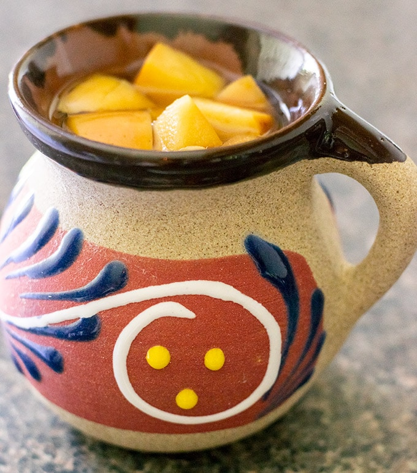

Ponche

Traditional Mexican punch enjoyed during the Christmas holidays and festivities.
This spiced mexican fruit punch uses guava, cinnamon, pilloncillo and other fruits to create a warm and comforting drink. This drink is usually enjoyed by adults with a little bit of liquor to help keep spirits and drinkers warm during the chilly winter nights.
Ingredients
- plum (fresh or dried)
- raisins
- cinnamon sticks (one large broken in half or two small)
- pilloncillo or brown sugar if not available
- a piece of sugar cane (about 1 or 2 inches)
- dried hibiscus flowers (2 or 3 flowers)
- guava fruit or guava juice concentrate
Steps
- Boil water in a pot and add the cinnamon sticks as if creating cinnamon tea.
- Once the water has boiled, turn down to medium heat and add the plum, guava (or guava concentrate) and raisins.
- Stir to make sure the tea and fruit mix well.
- Add the dried hibiscus flowers. Remove once the ponche has achieved a nice red tint. Do not leave the flowers for a long time or your ponche may become bitter
- Disolve the piloncillo in a separate cup using the ponche you mixed so that is dissolves well and add into the mix. Taste and adjust to your liking of sweetness.
- Serve in a cup and add some of the cooked fruit into the cup for visual appeal. If adding liquor, best to use a clear spirit that won't change the taste so much, vodka or whiskey is recommended.